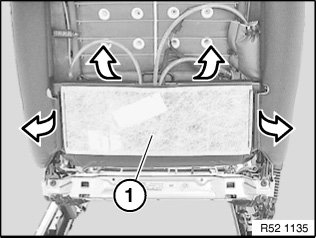
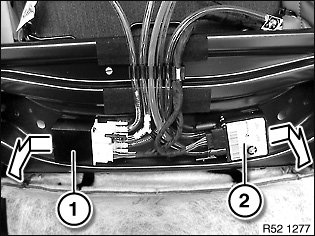
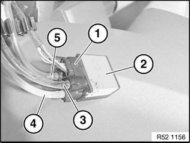

52 15 057 Removing and Installing / Replacing Valve Housing For Lumbar Support / Backrest Width Adjustment
52 15 057 Removing and installing / replacing valve housing for lumbar support / backrest width adjustment

Necessary preliminary tasks:
- Remove rear panel on front seat

Detach backrest cover (1) from backrest frame.

Remove valve housing in direction of arrow from backrest frame.
1. Valve housing for backrest width adjustment
2. Valve housing for lumbar support
Installation:
Check valve housing for correct seating in backrest frame.

Unfasten plug connection (1) and disconnect.
Unlock quick connector and detach air hoses (3) and (4 and 5) from valve housing (2).
Valve unit for lumbar support:
(3)Hose (black), lumbar drive
(4)Hose (blue), top lumbar cushion
(5)Hose (red), bottom lumbar cushion
Valve unit for backrest width adjustment:
(3)Hose (clear), lumbar drive
(4)Hose (clear), left lumbar cushion
(5)Hose (clear), right lumbar cushion
NOTE: Connections are coded against incorrect assembly.

NOTE: Carry out function check.